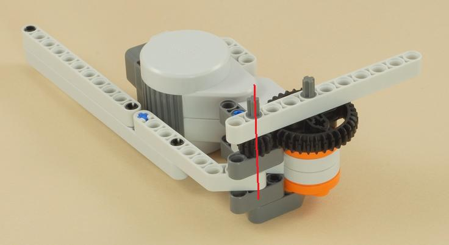
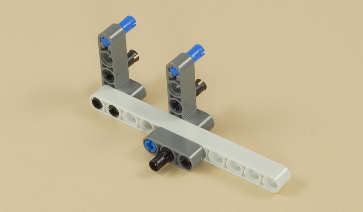
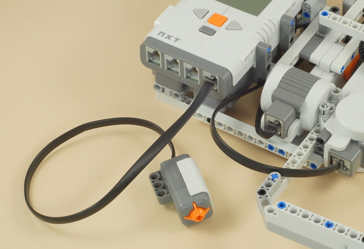

Fun Projects for your LEGO® MINDSTORMS® NXT!
|
|
Fun Projects for your LEGO® MINDSTORMS® NXT! |
| Baseball Game |
|

1-4
| Start by building the
Ball Shooter (without the NXT
and wire connection). Click the picture for building instructions. |

|
|
5
6
7

8

9
 |
OR |
 |
You can use the NXT with either AA batteries or the NXT Rechargeable Battery Pack. |
10
11
12

13
14

15
16

17

|
Baseball Game Programming
Use the Baseball program for the Baseball Game.
Find an empty area on the floor next to a wall or closed door and
position the game about 2 feet (60 cm) from the wall so that the pitched
balls will bounce against the wall and rebound in the direction of the
batter and catcher, as shown below.
|
Challenges
|
|
Copyright
©
2007-2010 by Dave Parker. All rights reserved. |